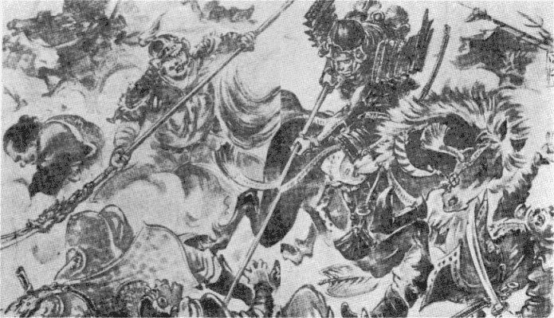

「馬がほしい、馬がほしい、武士が戦場で、
功名するのはただ馬だ。馬ひとつにある。ああ馬がほしい」
川音清兵衛はねごとのように、馬がほしいといいつづけたが、身分は低く、年は
若く、それに父の残した借金のために、ひどく
貧乏だったので、馬を買うことは、思いもおよばなかった。清兵衛は、
毛利輝元の
重臣宍戸備前守の
家来である。
かれはなぜそんなに馬をほしがったか。それというのは、
豊臣秀吉がここ二、三年のうちに、
朝鮮征伐を実行するらしかったので、もしそうなると、
清兵衛もむろん
毛利輝元について
出陣せねばならぬ。そのとき、テクテク徒歩で戦場をかけめぐることは、武士たるものの
名誉にかかわる、まことに不面目な話だからである。そこで、ひどい工面をして、やっと三
両の金をこしらえた清兵衛は、いそいそと、領内の牧場へ馬を買いに出かけた。二、三日たって、かれがひいてかえったのは、まるで、生まれてから一度も物を食ったことがないのかと思うような、ひどいやせ馬だった。
清兵衛は、うれしくてたまらない様子で、これに
朝月という名をつけ、もとより、うまやなどなかったので、かたむいた家の
玄関に、屋根をさしかけて、そこをこの朝月の小屋にした。友人たちは、
骨と皮ばかりの馬を、清兵衛が買ってきたのでおどろいた。
「これは、
朝月でなくて、やせ
月だ」
そして、
「
清兵衛、この名馬はどこで手に入れた」と、からかい半分にきいたりしようものなら、
「ほう、おぬしにもこれが名馬だとわかるか」
清兵衛は
得意になって、朝月を見つけた話をきかせたうえ、
「これが三両で手にはいったのだ、たった三両だよ」とつけくわえる。
その様子があまりまじめなので、あきれかえった友だちは、しまいには、ひやかすのをやめたが、いつしか三両でやせ馬を買ったというところから「三
両清兵衛」のあだなをつけられてしまった。
清兵衛は、そんなことにはすこしもかまわず、自分は食うものも、食わないようにして、馬にだけ
大豆や、大麦などのごちそうを食わせた。
朝月は主人清兵衛の心がよくわかったとみえ、そのいうことをききわけた。そして、しだいに肥え太ってきた。このことが、
宍戸備前守の耳に入ると、
「
清兵衛のような
貧乏な者が、馬をもとめたとは、あっぱれな心がけ、武士はそうありたいものだ」
と、さっそくおほめのことばとともに、金五十両をあたえられた。
清兵衛は、この金を
頂戴すると、第一に新しい
うまやを建てた。そして、自分のすむ家は、屋根がやぶれて雨もりがするので、新築のうまやのすみに、三
畳敷きばかりの
部屋を作らせて、
「朝月、今日から
貴様のところへやっかいになるぞ、よろしくたのむて」
と、ふとんも
机も、
鎧びつまでもここへもちこんできて、
馬糞の
臭いのプンプンする中に、平気で毎日毎日
寝起きしていた。
「三
両清兵衛は、馬のいそうろうになったぞ」
友人たちは
笑った。清兵衛はあいかわらず平気なもの。
「朝月。いまに貴様とふたりで、笑ったやつを笑いかえしてやる働きをしてやろうな。そのときにはたのむぞ」
「ウマクやりますとも、ひ、ひん！」
まさかそんなことはいわなかったが、清兵衛のことばがわかったと見えて、朝月は首をたれた。清兵衛は一
生懸命になって、朝月を養ったので、その
翌年には見ちがえるような
駿馬になった。
「おや、おや、あのばけもの馬がりっぱな馬になったぞ」
「さすがに
清兵衛は馬を見る目がある。あのやせ馬があんなすばらしいものになろうとは、思えなかった」
「いや、あれほど心を入れて
飼えば、
駄馬でも名馬にならずにはいまい」
昨日まで
笑っていた友だちは、
朝月の
駿馬ぶりを見て、心からかんぷくしてしまったのであった。
このときである。
うわさの
朝鮮征伐が、いよいよ事実となってあらわれた。
加藤清正、
小西行長、
毛利輝元らが、
朝鮮北方さして、進軍しているうちに冬となった。北朝鮮の寒さには、さすがの日本軍もなやまされ、春の雪どけまで、
蔚山に
城をきずいて
籠城することになった。加藤清正、
浅野幸長、それに毛利勢の
部将宍戸備前守らがいっしょである。
清兵衛が、残念でたまらなかったのは、まだ一度も、よき敵の首をとらず
籠城することであったが、こればかりはどうすることもできなかった。
「
朝月、残念だなア」
馬の
平首をたたいてなげきながら、毎日
備前守受け持ちの工事場へ出て、
人夫のさしずをしていた。
城がどうやらできあがったころ、
明軍十四
万の大兵が
京城に
到着し、この
蔚山城をひともみに、もみ落とそうと軍議していることがわかった。
十二月二十二日の夜半である。
蔚山城のうまやの中でも、あいかわらず、清兵衛は愛馬朝月といっしょに、わらの中にもぐってねむっていると、どうしたことか、にわかに朝月が一
声いなないて、そこにおいてあった
鞍をくわえた。
「どうしたのじゃ朝月、寒いのか」
清兵衛は、そのはなづらをなでていった。うまやの外の広場には、
下弦の月が雪を銀に照らしていた。そこにあったむしろを
背へかけてやろうとすると、
朝月はそれをはね落として、
鞍をぐいぐいとひいた。なにか事変の起こるのを感じたらしい様子である。
「おお、そうか、なにか
貴様は感じたのだなア」
清兵衛が、朝月に
鞍をつけると、静かになったので、
「ははあ、こりゃ、
明兵が
夜討ちをかけるのを、こいつ、さとったのだな、りこうなやつだ。よし、
殿に申しあげよう」
と気がついて、清兵衛は、あたふたと、
備前守の
寝所の外の戸のところへ立って、
「
川音清兵衛、
殿にまで申しあげます。
拙者の乗馬
朝月が、こよい
異様にさわぎまして、
鞍をかみます。そこで、鞍をつけてやりますと、静かにあいなりました。察するに、なにか異変のあるしらせかとぞんじます」
と、どなった。
「よくぞ知らせた。たったいま
軍奉行より、
明軍は、すでに三里さきまでおし寄せてまいった、防戦のしたくせよ、と通知がまいったところであった。それを早くもさとったとは、さすがに三
両で買った名馬、あっぱれ物の役に立つぞ。
清兵衛、そちは急ぎ
陣中に防戦のしたくいたせと、どなって歩け」
「はっ」
朝月をほめられて、清兵衛は、うれしくてたまらない。陣中を大声でどなり、
眠っている者を起こして歩いて、うまやにかけもどるなり、朝月の
平首へかじりつくようにして、
「おい、よく知らせてくれた。やっぱり
明兵が、
夜討ちをかけるらしいのだ。殿から
貴様はほめられたぞ」
清兵衛は、自分のほめられたより、うれしくてならなかった。そして、その
鞍の上にひらりと打ちまたがって
塀の方へゆくと、月下に
鎧の
袖をならす味方が、黒々と集まって静まりかえっている。
夜明けに間もなかった。月がすッと山のかなたに落ちていったと思うと、林や谷のあたりから、天地もくずれるばかりのときの声が上がって、
金鼓、
銅鑼の音がとどろきわたった。
明軍は月の入りを待っていたのである。うしおのように、
柵の外までおしよせてくると、待ちかまえていた日本軍――
浅野幸長、
太田飛騨守、
宍戸備前守以下、
各将のひきいる二万の
軍兵は、
城門サッとおしひらき、まっしぐらに
突撃した。不意をおそうつもりだった明軍は、かえって日本軍に不意をうたれたかたちで、
「これは――」
とばかり、おどろきあわて、見ぐるしくも七、八町みだれしりぞき、
清水という川のところでやっとふみとどまった。
川音清兵衛、今日こそ
手柄をたてんものと、いつも
先陣に馬をかけさせていたが、このときうしろの小高い山かげから、ど、ど、どと、山くずれのような地ひびき立てて、
大将軍刑
の
指揮する数万の
明兵が、
昇天の
竜の黒雲をまくように、土けむりを立てて、まっさか落としに
攻めくだってきた。
「さては
伏兵、急ぎ
城へ引っ返せ！」
城中から、
清正の使者がとんできたときには、日本軍はまったくうしろを
断たれ、
君臣たがいに散り散りになって、生死も知らぬありさまだった。
宍戸備前守は、わずかに八人に守られて、もう
討ち
死にの
覚悟で戦っている。そこへ、かけつけたのは
清兵衛で、大声にさけんだ。
「
殿、早々、
御城へお
退きなされませ。
拙者と
朝月が
先登つかまつります。朝月、一
期の大事、たのむぞ」

ぴしっと
一むちくれて、あとをかこんだ
明兵の中にとびこんだ
清兵衛は、
槍をふるってなぎたてた。朝月は朝月で、近づく敵兵の
肩、
腕、
兜のきらいなくかみついてはふりとばし、また、まわりの敵をけちらしふみにじる。この勢いに、勝ちほこった
明兵もおじけ立って、わあッ！ と左右に道を開くと、
「
殿、この道を、この道を――」
清兵衛は
血槍で、そこに開けた道を
指してさけんだ。
宍戸備前守は、そこをまっしぐらに城へと馬を走らせた。
有名な
蔚山籠城の
幕は、切って落とされたのである。
明軍は、城の三方をひたひたとおしつつみ、夜となく昼となく、
鉄砲をうちかけた。
明軍にかこまれると、すぐに
糧食はたたれてしまったが、味方の勇気はくずれなかった。よくかためよく防ぎ戦った。だが
難戦苦闘である。
柵はやぶられた。
石垣のあたりには、敵味方の死者がころがった。鼻をつく
鮮血のにおい、いたでに苦しむもののうめきは夜空に風のようにひびいた。
城中には飲む水さえなくなった。
「なにくそッ」
将士は、
額から流れて
兜のしのびの
緒に
つららになった
汗をヒキもぎり、がりがりかんでかわきをとめながら戦った。食うものがすくないので、しかたなく馬をほふってたべねばならなくなった。
「
拙者の馬をころすやつがあったら、この
腰の刀に物いわせるぞ」
清兵衛はがんばった。そして、日に一度ぐらい
渡されるにぎりめしを自分は食わずに馬に食わせたり、また、戦場にころがった
明兵の腰から、
兵糧をさぐって
朝月にあたえた。
「清兵衛の馬をいかしておくのは、もったいないな」
「朝月もやってしまおう」
ある夜、清兵衛が徒歩で、
城の外に出ていったのを知った
城兵二、三人は、うまやにしのんで、朝月をころして食おうとした。そして、
槍をひねってつき殺そうとした、
間［＃ルビの「かい」はママ］一
髪、
「ヒ、ヒン」
いなないた朝月は、たづなをふり切って、その
槍を取った兵の
肩さきに、電光石火の早さでかぶりつくと、大地にたたきつけた。それと見てにげ出そうとした
一人は、腰をけとばされて息もできずのめってしまった。
それがために、もう、だれもおそれて、朝月を殺して食いたいなどと思う者はなくなった。
「よくやった。よくやっつけた」
清兵衛は、朝月の首をだいてうれしなきにないた。
「朝月、死ぬ時にはいっしょだぞ。よいか、よいか――おお、まだ、水を今日はのませなかったな、待てよ」
清兵衛は、大地にふり積もった雪を、
兜の中にかきこみ、火をたくにも
薪がなかったので、自分の
双手をつっこみ、手のひらのあたたかみでもんで水にとかして、
「
朝月、のめよ」
と口もとに持っていってやるのだった。
心なしか朝月の大きな目がしらに、
涙が光っているようだった。そしてその水をのんで、長い顔をこすりつけてくる、その顔を静かにさすって、
「朝月、やせたのう」
と、うなだれた。
悲しかったのは、
清兵衛ばかりでなかった。
城兵たちはみな悲しかった。このままうえ死にするよりも、いっそのこと、はなばなしく戦って
討ち
死にがしたかった。
「どうだ、おのおの、生きておればひもじいから、飯がくいたくなる。死にさえしたらなんのことはないから、
今晩、
殿に願って、きって出ようではないか」
「死にさえすりゃ、ひもじくはない。賛成だ」
「
拙者も」
「死ね死ね」
「日本武士が
朝鮮まできて、うえ死にしたとあっては
恥だ。きって出ろ」
「夜討ちをかけて、敵の食物をうばったら、そいつを食って一日生きのび、
明日の夜また討って出よう」
夜討ちをかけることに賛成した者は、三百人からあった。その中に、
川音清兵衛も加わったのである。五、六人のものは、
宍戸備前守の前にかしこまって、
「ただいまから
夜討ちをかけ、敵の飯を食ってまいりとうございます」
「なに
敵陣へ飯食いにまいるか」
「は、
腹いっぱいになってもどってまいります」
こうして夜討ちの準備ができた。
丑満ごろになると、三百
余騎は
城門を開き、
明軍の中に
突撃した。
まさかとゆだんしていたところを、おそわれた明軍は、日本軍何万かわからないので、ろうばいするところへ、
得たりとばかりに、その陣に火をかけた。
「さア、いまだ、首よりもまず飯だ、飯だ！」
清兵衛は、うき足立った敵陣へ、まっしぐらに、
朝月をおどりこませ、左右につきふせた敵兵の
腰をさぐり、一
袋の
粟を発見すると、
「朝月、飯だぞ飯だぞ」
と、せわしく食わせて、自分も生の
粟をほおばるのだった。
「さア――」
と、朝月に、ふたたびまたがり、
乱軍の中にかけこもうとした。
「
倭奴、待てッ」
えんえんともえあがる
猛火に、三
尺の
青竜刀をあおく
輝かし、ゆくてに立った六
尺ゆたかの
明兵があった。
「そこどけッ」
清兵衛は
粟をくって、元気が出かかったところである。
槍をひねってつきふせようとすると、ひらりとそれをはずした
明兵は、かわしざまに、その
槍の千
段まきを、ななめにきり落とした。
「しまったッ」
からりと
槍の
柄をすてた
清兵衛は、大刀をぬきはなって
斬りおろせば、明兵は、左の
鎧の
袖でかちりと受けとめた。
傷を負わなかったところをみると、よほどいい鎧であった。これには清兵衛も、いささかおどろいているところへ、すかさず明兵はうちかかってきた。
朝月は高くいなないて、あと足立ちになり、その
明兵を
前肢の間にだきこもうとする。
「えい」
ぐっとたづなを左手にしめて、
清兵衛は二の
太刀を
討ちおろす。相手はぱっととびのきざま、横にはらった一刀で、清兵衛のひざがしらを一
寸ばかりきった。
「あっ！」
中心を失った清兵衛は、もんどり打って馬から落ちた。とたんに二の
太刀、
「えい」
と、清兵衛のかぶった
椎形の
兜の八
幡座をきったが兜がよかったので、傷は受けなかったものの、六
尺の大男の一げきに、ズーンとこたえ、目はくらくらとくらみ、思わずひざをついたところを、また
明兵が一げき加えようとすると、ぱっと空をおどり、その敵におどりかかったのは朝月であった。
「おお」
気をのまれた
明兵は、横にとびのいた。そのすきに立ち上がった
清兵衛。
「まいれ」
ときりかかった。
朝月は
畜生ながら、主人の恩を知っていた。清兵衛が立ち上がったとみて、うれしそうにいななき、明兵のうしろにかけまわって、すきがあらばとびかかろうとする。
「お、お、おッ」
明兵もおどろいた。前後に人馬の敵を受けたので必死。清兵衛は朝月の
助太刀に力を
得て、
「えいッ」
と、最後の
突撃。さアッと
太刀を横にうちふると、その太刀さきは、敵の
左頬から
右眼にかけ、
骨をくだいて切りわったので、
「ああッ」
と、
明兵はあおむけに、打ちたおれたところを、起こしも立てず、その
胸にいなごのように、とびかかった
清兵衛は、
「この
畜生、畜、畜生――畜……」
とさけびながら、
胸板をつづけさまに
二太刀さして、
「まだ、まだ、まいらぬか」
と、えぐっていたが、さきほどよりの
激戦に、力つきた清兵衛は、敵がたおれたと知って、そのまま、おりかさなって
気絶してしまった。
朝月は、
狂気のようになって、いななきながら、その周囲をかけめぐった。そこを通りかかったのは七、八人の
明兵で、
「
倭奴がたおれている」
「首を
斬れ」
と、
清兵衛を引き起こそうとするのを見た朝月は、いきなり
一人の
肩さきをくわえ、空中にほうり上げ、さらに
二人をけつぶした。
「わあッ」
「これは
竜馬だ」
「
生け
捕れ」
「殺せ」
明兵は、朝月めがけて、
槍や
青竜刀をかざしてせまった。
人馬一
騎討ちのものすごい光景が、どっと、もえあがる火にうき上がったのを見たのは味方であった。
「おお、あれは朝月ではないか」
「
清兵衛はどうした」
「馬でも日本の馬だ。
明兵にうたせるな」
「
心得た」
「朝月――」
と声をかけて、そこへどやどやとかけつけてくる。味方を見た朝月は、いきなり
気絶した清兵衛の
鎧の
胴をくわえ、
明兵をけちらして、まっしぐらに、
城の門へとかけこんでいった。
「
朝月だ」
「
清兵衛をくわえているぞ」
「おい、しっかりしろ、清兵衛」
城兵たちは、朝月の口から清兵衛を受け取って、かいほうした。一方では血にまみれた朝月のからだを、ふきとってやる者もあった。朝月は五ヵ所ばかり
傷をうけていたが、ただ、清兵衛ばかり気づかいらしく、じっと見ていた。
「う、うーむ」
と、
清兵衛は、やがて息をふき返したが、まだ、目はかすんでいたので、そこに朝月のいるのが見えなかった。
「おのおの、かたじけない――だが、朝……朝月はどうなったろう、朝月は――」
「無事だ、ここにいる」
城兵たちは、朝月をそこへひきよせていった。
「おお、朝月」
清兵衛は起きようとすると、朝月は
前肢を折って、近々と顔をおしつけるようにした。清兵衛は、その首にとりすがった。この光景を見た城兵たちは、
胸をしめつけられて声もなかった。この朝月が、主人清兵衛をくわえて帰ったことをきいた
宍戸備前守は、そこへあらわれて、
「朝月は
稀代の名馬だ。よくぞ働いてくれた」
と、たいせつな
糒をひとにぎり、朝月の口へ入れてやった。ところへ、
清兵衛の
討ち取った、
明兵の馬と着ていた
鎧をかついで、味方は引きあげてきた。見るとその
鎧は
雑兵の着るものではなかった。
「名ある
大将分らしい。
捕虜を引き出して
首実検させて見よ」
こう、
備前守はいった。
七、八人の
明兵がひき出され、たき火でその馬の主は何人かと、実検させた。すると、
一人の捕虜はとび上がってさけんだ。
「これは五十人力といわれた
呂州判官にございます」
「なに呂州判官と申すか」
城兵たちも思わずさけんで、顔を見合わせた。
呂州判官とは、日本軍にまできこえた明の
豪将、一万の兵を
従える呂州判官
兵使柯大郎といって、
紺地錦の
鎧を着ていたのであった。
宍戸備前守はじめ、人々は、
川音清兵衛のこの戦功を、いまさらのようにおどろいてしまった。
「敵一万の
大将を
討ち取ったとは、あっぱれな働きである。いそぎ
軍奉行の
太田飛騨守へ、この
旨をとどけ出せ。
毛利輝元勢宍戸備前守の
臣、川音清兵衛、
討ち取ったとな、大声で――大声でいうのじゃぞ」
備前守は清兵衛を、のぞきこむようにしていった。自分の部下からこんな勇士が出たのが、うれしくてたまらなかったからである。
「
殿、功は
拙者一人のものではありませぬ。こ、この
朝月も働きました。このことを、戦功帳に書いていただくことはあいなりませぬか」
清兵衛は、自分の
手柄よりも、愛馬朝月の戦功を永久に残しておきたいのである。
「うむ、その方の心のままにいたせ」
「朝月、おゆるしが出たぞ。戦功帳にきさまの名がのるのだ。さあ、いっしょにゆこう――」
朝月はうれしそうにいなないた。
「三
両で買った馬も、こうなるとたいしたものだ」
「うらやましいな」
「たとえ千両、万両出した馬でも、主人にやさしい心がなかったら、名馬にならぬ。馬よりも
清兵衛のふだんの心がけが、いまさらうらやましくなってきたぞ」
去ってゆく馬と、清兵衛を見て、人々はささやきかわした。
× × × ×
蔚山城のかこみのとけたのは、正月三日で、
宇喜多秀家、
蜂須賀阿波守、
毛利輝元など十
余大将が、
背後から
明の大軍を破った。このとき
入城してきた毛利輝元は、
重臣宍戸備前守にむかって、
「朝月という名馬が見たいぞ――
川音清兵衛をほめてやりたい。これへよべ。これへ馬をひけ」
と、なによりさきにいった。そこへ、やせた清兵衛がやせた朝月をひいてあらわれると、
毛利輝元は、
籠城の苦しさを思いやって、さすがに目に
涙を見せ、
「これへ……これへ……」
やさしくまねいて、みごとな
陣太刀一振りを清兵衛にあたえた。
「ありがたきしあわせ。朝月にかわって
御礼申し上げます」
こういった清兵衛は、その
太刀を朝月の首にかけてやって、そこへかしこまった
姿は、いいようのないゆかしいものがあった。
（昭和六年六月号）